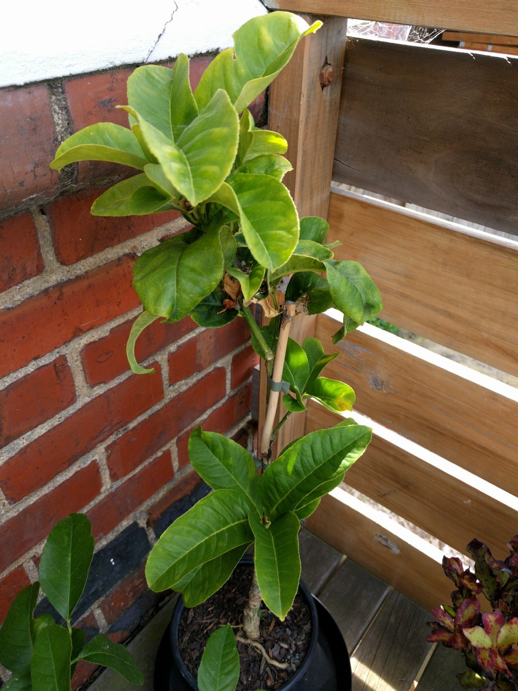

Unusual and rare variety, with amazing looking fingered fruit that can be used in cooking or for a weirdly wonderful-looking natural room citrus fragrance. The fingers of the fruit can be broken off individually to use. Plant in a sunny frost-free site, or in a container
